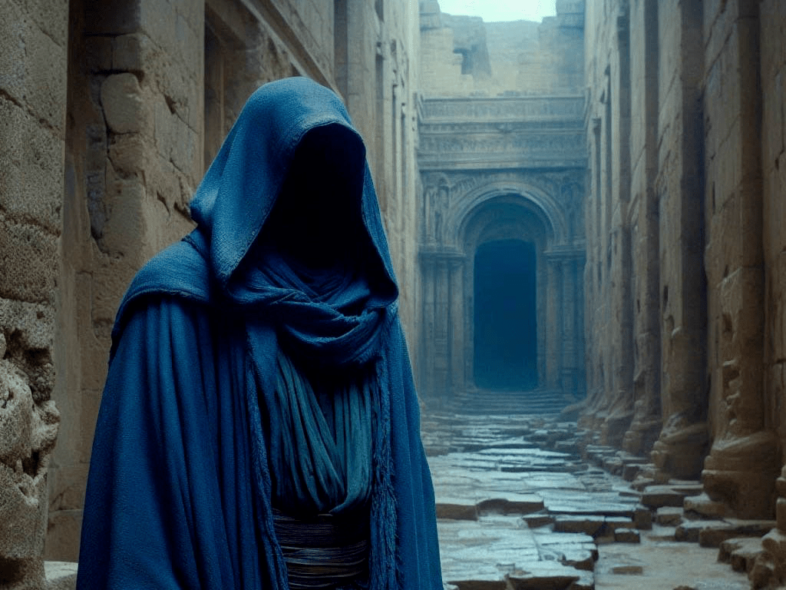
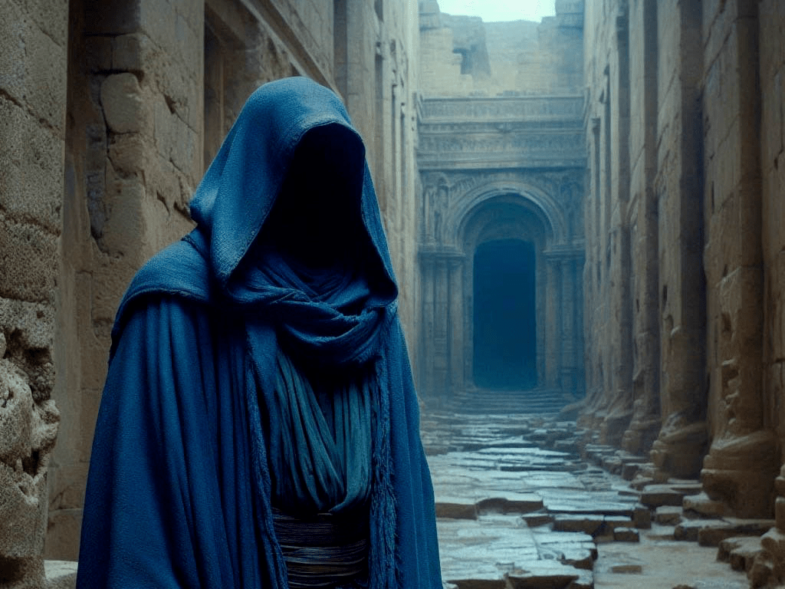

Ruine
Quelle: P8
Die Ruine steckt voller verlorener Geheimnisse und Rätsel. Der Fremde erblickt nach kurzer Suche das Artefakt und greift sofort dannach.
Quelle: P8
Die Ruine steckt voller verlorener Geheimnisse und Rätsel. Der Fremde erblickt nach kurzer Suche das Artefakt und greift sofort dannach.